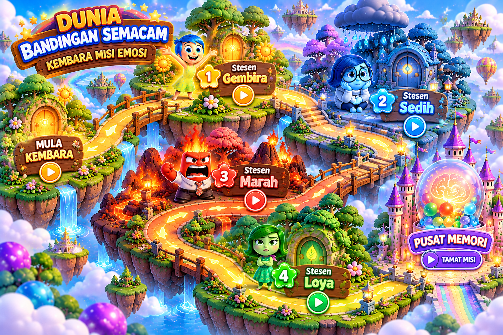

😊
Stesen Joy — Gembira
Padankan bandingan semacam yang betul.
Bersedia untuk pengembaraan penuh emosi! Jom teroka dunia perbandingan semacam, selesaikan cabaran dan kumpulkan bintang.
Perbandingan semacam ialah ungkapan yang membandingkan sesuatu dengan perkara lain untuk menjadikan maksud lebih jelas dan menarik. Kita sering menggunakan perkataan seperti, bagai, bak dan umpama.
Pilih stesen yang ingin diterokai. Lengkapkan aktiviti untuk mengumpulkan bintang!

Imej peta belum ditemui. Aktiviti di bawah masih boleh dimainkan.
Setiap stesen mempunyai misi Bahasa Melayu. Tekan butang untuk membuka kuiz.
Padankan bandingan semacam yang betul.
Pilih maksud ungkapan yang tepat.
Lengkapkan ayat dengan jawapan yang sesuai.
Kenal pasti bandingan semacam dalam ayat.
Kumpulkan bintang dengan melengkapkan setiap stesen. Awak boleh mencuba semula mana-mana misi.
Lengkapkan stesen untuk membuka ganjaran.
Ambil gambar atau pilih gambar daripada peranti untuk kenangan kembara. Kamera hanya boleh digunakan jika pelayar dan peranti memberikan kebenaran.
Tekan butang untuk mengaktifkan kamera.
Gambar pilihan dipaparkan pada peranti ini sahaja.
Masukkan nama dan cetak atau simpan sijil selepas melengkapkan misi.
SIJIL PENGHARGAAN
Sijil ini dianugerahkan kepada
kerana menyertai Dunia Bandingan Semacam: Kembara Misi Emosi.
Teruskan belajar, membaca dan menggunakan Bahasa Melayu dengan kreatif!
⭐ Bintang dikumpulkan: 0 daripada 4